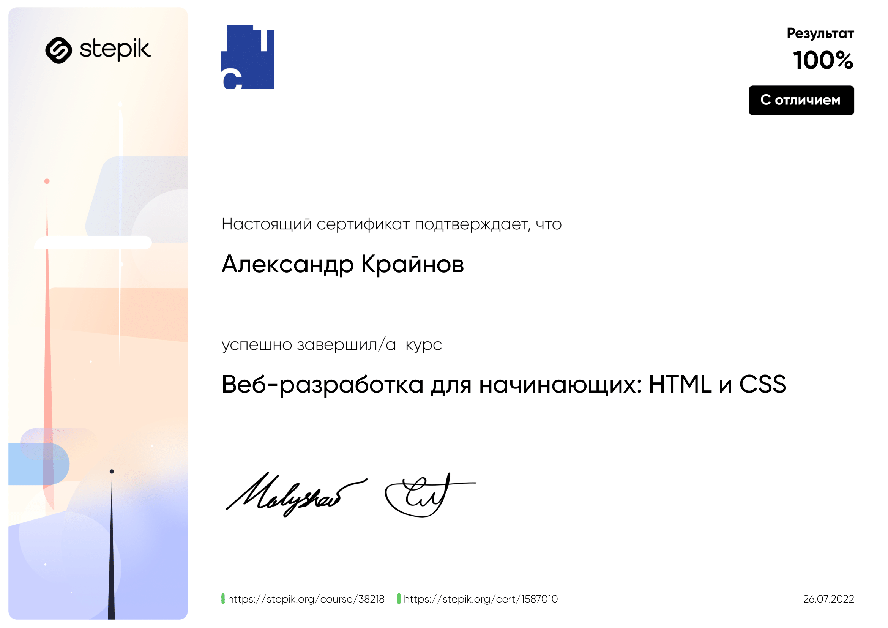

Мои навыки
Я прошел курс по веб-разработке на Stepik, откуда почерпнул большую часть своих знаний о веб-программировании
Имею некоторый опыт работы с ChatGPT: вместе написали текстовый редактор на Python
А вот и ссылка на проект на Гитхабе:
СсылочкаНо не все созданное мной, плод работы ChatGPT. Я собстенноручно создал Task Manager (приложение-список задач)
СсылкаТакже я владею аудио- и видео- монтажом, что я продемонстрировал, выступив аудио, видео и "просто" режиссером любительского документального фильма "Геноцид" в рамках акции "Без срока давности"
Еще одна ссылочкаА еще, я являюсь Линукс-юзером, что для IT специалиста, хоть и будущего - плюс